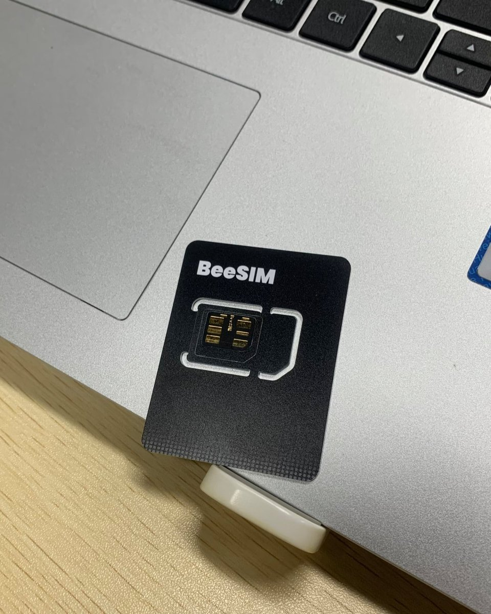

时隔半年，又来测超雪团队的BeeSIM了！
这是一张蓝牙版的小白卡，可通过微信小程序、网页以及NekokoLPA2的蓝牙功能管理
不支持读卡器，所以在设备上是一张普通SIM卡。你可以将它放入随身WiFi、CPE等设备，再用手机远程控制这张eUICC
至于优惠我也跟在争取，后面详细评测会附带优惠券，上淘宝买就行了
例如放在国行iPhone 17e上的实体卡槽，俩eSIM留给国内运营商。出境前先把eSIM二维码扫进这张卡并启用，等落地时再禁用任意一张eSIM，启用这个“实体卡”，待回国后将实体卡禁用全留国内特供eSIM就行。

这是一张蓝牙版的小白卡，可通过微信小程序、网页以及NekokoLPA2的蓝牙功能管理
不支持读卡器，所以在设备上是一张普通SIM卡。你可以将它放入随身WiFi、CPE等设备，再用手机远程控制这张eUICC
至于优惠我也跟在争取，后面详细评测会附带优惠券，上淘宝买就行了
例如放在国行iPhone 17e上的实体卡槽，俩eSIM留给国内运营商。出境前先把eSIM二维码扫进这张卡并启用，等落地时再禁用任意一张eSIM，启用这个“实体卡”，待回国后将实体卡禁用全留国内特供eSIM就行。

据说是做卡贴的超雪团队出品的BeeSIM，解决国行手机不支持eSIM的问题
这张深圳产的「BeeSIM」美中不足的是不支持读卡器
蓝牙通信、实现eSIM转实体卡
插CPE上用手机控制写卡、切卡，简直完美！ https://t.co/xAuV8PgfUm
这张深圳产的「BeeSIM」美中不足的是不支持读卡器
蓝牙通信、实现eSIM转实体卡
插CPE上用手机控制写卡、切卡，简直完美！ https://t.co/xAuV8PgfUm